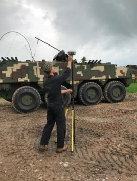

Mohammad Shafarin Baharom
Vocational Training Officer
Contact Info
- +60129229751
- shafarinbaharom@gmail.com
- www.msexclusivegallery.com
- Kampung Buloh Melintang Kangkong, 17040, Pasir Mas, Kelantan.
Skills
-
Microsoft Office
-
C++ Programming
-
Rohm Language
-
PLC
-
SCADA
-
Arduino
-
Matlab
-
Proteus
-
Altium Designer
References
Mohd Sukri Bin Almuin
A.S.Chief,Rohm-Wako Electronic(Malaysia) Sdn Bhd
- +60194122968
- sukrialmuin@gmail.com
Ts Mohd Abdul Hadi bin Osman
Manager, DRB Hicom Defence Technologies Sdn Bhd
- +60139861327
- hadiosman@gmail.com
About Me
A committed, diligent and technically inclined Instrument Engineer from ROHM-WAKO Electronic (Malaysia)
who has strong and efficient work ethic. He is known for being well equipped and possessing the ability
to provide precise and accurate solutions to technical and non-technical queries raised. He is trusted
to be the person of contact to deal with ROHM-WAKO Engineering teams throughout the company’s global branches.
Through the time he has been with ROHM-WAKO, he has shown rapid growth in his capability to cope with
numerous assignments and led teams for various critical decisions making for improvement and sustainability
of the company’s instruments and products.
Having the experience of working with a Japanese based company, he
has been able to incorporate their working culture, where he thought himself to be more disciplined, able to
multitask and follow the given schedule closely, ensuring all deadlines are met, if not earlier. He has
the skills and expertise to deal with high work demand and succumb to fast-paced work environment. He
has demonstrated solid communication and presentation skills and has high level of commitment and passion
in pursuing projects and tasks given. He strongly believes that with the right platform and disclosure,
he will be able to utilize his skills and abilities to contribute further to the industries.
Education
Universiti Teknologi MARA (Shah Alam), Malaysia
2011 - 2015
Bachelor of Engineering(Hons) Electronic Engineering Major in Instrumentation
CGPA: 3.35/4.00
Universiti Teknologi MARA (Puncak Alam), Malaysia
2010 - 2011
Foundation in Engineering
CGPA: 3.09/ 4.00
Sekolah Menengah Kubang Bemban,Malaysia
2005 - 2009
Sijil Pelajaran Malaysia
8A 2B
Experience
ROHM-WAKO Electronic (Malaysia) Sdn Bhd
November 2017 - January 2021

Instrument Engineer
• Instrument team lead for Engineering Division
• Key person for point of contact between instrument teams from ROHM-WAKO Japan, ROHM-WAKO Malaysia and ROHM Head Quarters Engineering teams.
• Plan and prepare schedule for any machine setup and machine improvement
• Perform machine setup (hardware and software); test and evaluate new machines, commencing from machine arrival to running mass production.
• Specialize in setup, troubleshooting and handling of all instruments such as Electronic Tester, Visual Inspection Camera (VIC), oscilloscope, high tech microscope, high speed camera, multimeter, sensors and any other instrument parts.
• Perform machine and process plant design improvement mainly in automation, Rohm language, C++ and PLC program.
DRB-HICOM Defence Technologies Sdn Bhd
February 2016 - November 2017
Electrical Engineer
Part of one of the largest Malaysian Military Project (worth RM7.5 Billion) to develop the new armored fighting vehicle named AV8 GEMPITA for the Malaysian Army. Key responsibility includes developing the vehicle’s weapons systems, focusing on the Electrical and Electronics.
• Recipient of transfer of technologies from Denel Land System, South Africa which is then analyzed and tested which include finite elements, analysis, test and also instrumentations.
• Incorporating Remote Control Weapon Station (RCWS), 2-man turret and Anti-Tank Guided Weapon (ATGW) into subsystems.
• Responsible for the electrical weapon subsystem integration, verification, validation and qualification (IVVQ) for the first unit Armored Fighting Vehicle Surveillance and most of the other variants.
• Able to do simple troubleshooting for 12.7mm Heavy Machine Gun (HMG)(50 Cal) and 30mm Cam Gun.
F&N Dairies Manufacturing Sdn Bhd
September 2015- January 2016
Automation Engineer
• Perform plant improvement mainly in Automation, PLC or software upgrading.
• Assist on schedule maintenance mainly for processing plant.
• Support ASRS and robotic system at Raw Material Warehouse.
• Direct access to plant break down and provide technical knowledge to Engineering Team.
• Perform hardware and software inspection and troubleshooting for all instrumentation and sensors in the processing plant.
PFCE Ponterosso Sdn. Bhd.
July 2014 - August 2014
Instrument Engineer
• Overhauled various type of Oil and Gas Valves
• Tested multiple Oil and Gas Pressure Safety Valves
Extra Curricular
Universiti Teknologi MARA, Malaysia
2011 - 2015
Activities
• Leader for ABU ROBOCON competition,2015
• Learning Program Bureau in Invention and Robotic Club,2015
• Members of Institute Engineers Malaysia,IEM,2015
• Head Organizer for PIC Programming Class,2014
• Members of Institute of Electrical and Electronics Engineers,IEEE,2013
• Research and Development Bureau for UiTM Learning Programme
Achievements
Universiti Teknologi MARA, Malaysia
2011 - 2015
Awards
• Dean’s List Award Semester 7 (GPA:3.51), 2015
• Fourth Place in Survival Robot Competition, Pisa Penang, 2015
• Gold Medal for Volleyball Competition in Sukan Antara Kolej,2015
• Silver Medal for Volleyball Competition in Sukan Antara Fakulti, 2014
• Dean’s List Award Semester 6 (GPA:3.50), 2014
• Bronze Medal for Innovation and Invention Design Competition,2014
• Dean’s List Award Semester 5 (GPA: 3.86), 2014